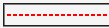
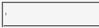

hr要素にボーダーを指定するとき、指定内容によってはボーダーが表示されずhr要素が点のようになることがある。
<hr style="border-top:2px dashed red; border-bottom:2px dotted red;">
hr要素を赤い破線で表示させようとしています。
WinIE6.0での表示（標準モード）
N7.02での表示（標準モード）
hr要素にheightプロパティを指定するとバグを回避できます。heightプロパティには上ボーダーの幅と下ボーダーの幅の合計値と同じかより大きい値を指定してください。
<hr style="border-top:2px dashed red; border-bottom:2px dotted red; height:4px;">
または、ボーダーの指定方法を変えることでバグを回避できることもあります。なお、同じような症状のバグがありますが（Mozバグ053）、このバグとは回避法が異なります。hr要素に display:block; を指定してもこのバグは回避できません。
N7.02およびMoz1.4betaの標準モードおよび互換モードで不具合の発生が確認されました。